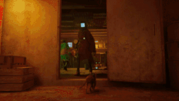

Игровой процесс
Игра представляет собой приключенческую игру от третьего лица. В ней есть элементы открытого мира, а также упор, сделанный на атмосферу и искусство[4][5]. Игрок, управляя рыжим котом, должен решать головоломки для того, чтобы продвигаться по сюжету, перемещая препятствия и перебираясь по платформам. Протагониста сопровождает дрон-спутник по имени B-12 (Б-12), который может помочь, переводя язык роботов и храня предметы, найденные по всему миру. Одни из врагов игры — зурки (англ. Zurks), которые будут нападать на игрока свирепыми роями[4].
Группа из четырёх бездомных кошек бродит по заброшенному зданию, однако один из них, попытавшись перепрыгнуть через сломанную трубу вслед за сородичами, падает в пропасть и оказывается в безлюдном подземном городе. Вскоре кот находит лабораторию, где помогает загрузить искусственный интеллект в тело маленького дрона B-12. Дрон объясняет, что ранее помогал некоему учёному, но большая часть его памяти была повреждена, и ему нужно время для восстановления. B-12 обещает помочь герою вернуться на поверхность и сопровождает его дальше в город. По мере того, как они путешествуют дальше, пара обнаруживает, что, хотя в городе полностью отсутствует человеческая жизнь, там остались прислуживавшие людям роботы — Компаньоны. За время отсутствия человечества Компаньоны обрели самосознание и построили собственное общество, но оказались в ловушке под землёй. Руины также кишат Зурками — существами-мутантами, которые были созданы для пожирания мусора, но в дальнейшем перешли на органическую жизнь и роботов.
Пара встречает Момо — участника группы Аутсайдеров, посвятивших себя поиску пути на поверхность. С помощью Компаньонов кот и B-12 добираются до сектора Мидтаун, где встречает ещё одного «аутсайдера» Клементину, которая планирует украсть атомную батарею для обеспечения питания поезда метро, ведущего на поверхность. Трио пойманы и арестованы Стражами, но кот помогает всем сбежать из тюрьмы. Клементина остаётся, чтобы ввести Стражей в заблуждение, в то время как кот и B-12 убегают на метро, которое доставляет их в центр управления городом.
По прибытии в контрольный центр к B-12 наконец возвращаются все его воспоминания. Согласно им, учёный пытался загрузить своё сознание в тело робота, но процесс пошёл наперекосяк. B-12 также вспоминает, что Город-крепость 99 был построен, чтобы укрыть человечество от катастрофы на поверхности, но в конце концов чума уничтожила всё человеческое население. Понимая, что наследие человечества теперь принадлежит Компаньонам и коту, B-12 жертвует собой, чтобы открыть противовзрывные двери. После их открытия на город падает солнечный свет, который сжигает Зурков и деактивирует Стражей.
Попрощавшись с дроном, кот покидает город через главный выход и достигает поверхности. Как только герой уходит, возле выхода загорается экран.
Разработка
Koola и Viv, соучредители BlueTwelve, начали работать над Stray, первоначально известным как HK_Project, поскольку они хотели заняться независимым проектом после работы на Ubisoft. После того, как они выложили кадры из игры в Твиттере, компания Annapurna Interactive обратилась к ним в апреле 2016 с предложением издать проект[6]. Для разработки игры в 2016 году была основана BlueTwelve Studio[7]. Разработка проходила в Монпелье на юге Франции. Игра Stray находилась под сильным эстетическим влиянием города-крепости Коулун, в то время как игровой процесс был вдохновлён котами основателей, Мерто и Риггсом[6]. В игре используется игровой движок Unreal Engine 4[8].
Об игре было объявлено 11 июня 2020 года на мероприятии PlayStation Future of Gaming[9][10][11]. В трейлере Sony на выставке Consumer Electronics Show в январе 2021 года срок выпуска игры был отмечен мелким шрифтом как «октябрь 2021»; позднее Sony убрала данный текст из трейлера[12]. Игра вышла для Windows, PlayStation 4 и PlayStation 5
Критика
Согласно агрегатору рецензий Metacritic, игра получила «в целом благоприятные» отзывы[43][44]. Критики высоко оценили сам город, аутентичное изображение кошки, NPC, синтезаторный саундтрек а также простые, но увлекательные головоломки, в то время как критика была направлена на неоригинальность действий и стелс-механику
Джордан Девор из Destructoid похвалил идею названия и подчеркнул, как реалистичное изображение кота контрастирует с миром пост-киберпанка, написав: «Этот разрушенный, но обнадёживающий научно-фантастический мир построен аутентичным, продуманным способом и добавление обычного кота, который любит кромсать диваны, опрокидывать вёдра с краской и прижиматься к самым случайным уютным местам, — это такой отличный контраст»[52]. Джош Хармон из Electronic Gaming Monthly (EGM) направил критику в сторону диссонанса между апатичной, вуайеристской природой реалистичного кота и его способностями решать головоломки и похвалил его более правдоподобные моменты, написав: «… вы исследуете, чтобы решать головоломки и ставить галочки перед некоторыми объективными рамками, но удовольствие от этого исходит от чего-то вполне правдоподобного: кошка в незнакомой среде, обследующая свою новую территорию, преследующая всё, что кажется интересным, и опрокидывающая кучу вещей в процессе»
Блейк Хестер из Game Informer указал на механику стелса, боя и уклонения в качестве главного недостатка, заявив, что разработчики не смогли использовать весь потенциал кота, в то время как плотный, «художественно-фантастический» мир его приятно удивил, написав: «Подземный город постоянно впечатляет и доставляет удовольствие исследовать его, от подземных коллекторов до загромождённых городских пейзажей, полных неона, от высокодетализированных квартир до одиноких крыш»[54]. Пол Тамбурро из GameRevolution выразил недовольство неудобными подсказками кнопок, непоследовательными головоломками, варьирующимися от очень простых до «разочаровывающе тупых», и не самую большую продолжительность игры, но похвалил «великолепный» мир киберпанка, роботов-неигровых персонажей, аутентичное изображение кота и его динамику c B-12
В своей статье для GameSpot Алессандро Барбоса раскритиковал «менее выдающуюся» боевую и стелс механику, но похвалил игру за отказ от механики типичных головоломок в пользу концентрации игрока на способностях и ограничениях кота, заявив: «Главная сила Stray в том, насколько хорошо его общий дизайн воплощает уникальную перспективу и возможности главного героя, но это далеко не единственная отличительная черта всего приключения»[56]. Сэм Лавридж из GamesRadar отметил неудобную камеру и отсутствие указателей, но похвалил игровой процесс, написав: «Есть головоломки, которые нужно решить, разделы скрытности и множество исследований, которые нужно сделать, и всё это прекрасно сочетается… [Экшн-сцены] прекрасно уравновешивают более спокойные и исследовательские моменты, которые составляют большую часть игры».
Том Маркс из IGN оценил плотность мира и богатство его атмосферы, заявив: «Красиво спроектированный город, через который вам предстоит пробираться, мрачный, но без пессимизма, полон истории, которую нужно изучить, и очаровательных горожан-роботов, с которыми можно пообщаться, несмотря на довольно антиутопическую ситуацию вокруг них», но ему не понравилась неуклюжая и жёсткая система движений, основанная на подсказках кнопок[58]. В статье для PC Gamer Джон Бейлс восхищался системой движения в игре, заключая: «…эта [кнопочная подсказка] идеально подходит для гибкости животного с взвешенными целями, которое заботится не о безумных прыжках, а сканирует окружающую среду в поисках чёткой цели и изучает доступные поверхности … общий результат — гладкий, удовлетворяющий цикл паузы, взгляда, прыжка, который поддерживает кошачью иллюзию», но считает неоригинальную простоту последовательностей действий самым слабым аспектом игры
Крис Скаллион из Video Games Chronicle[en] назвал Stray «одним из лучших релизов [Annapurna Interactive] на сегодняшний день» и похвалил его саундтрек, сказав: «Хотя [Янн ван дер Кройссен] специализируется на музыке с чиптюном, электронный саундтрек здесь точно знает, когда надо вызывать у игрока трепет, когда страх, а когда задеть наши надоедливые струны человеческого сердца»[60]. Келси Рейнор из VG247 оценила эмоциональные элементы игры и написала: «Дружба, которая разворачивается в результате ваших усилий, невероятно эмоциональна и вызовет что-то в вашей душе … [Бродяга-кот] трещит по швам от любви и жизни, даже в мире, который временами кажется таким далёким от этого»
Признана «лучшей дебютной инди-игрой» и стала победителем в номинации «Лучшая независимая игра» на премии The Game Awards 2022
Игра получила 1-е место в номинациях «Дебют года»[41] и «Приключение года»[42] и 2-е место в номинации «Игра года» российского издания «Игромания»
Примечание
Skrebels J. Stray Revealed for PS5 (англ.): The internet is about to go wild // IGN — 2020.
Stray, игра про кота в кибергороде, выйдет 19 июля — геймплейный трейлер. DTF (3 июня 2022).
Jeuxvideo, Tiraxa Stray : si vous aimez les chats, ne passez pas à côté de ce jeu vidéo ! Jeuxvideo.com (18 июля 2022). Дата обращения: 19 июля 2022.
Ссылки
- stray.game — официальный сайт Stray